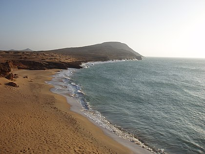
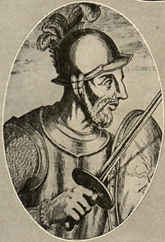
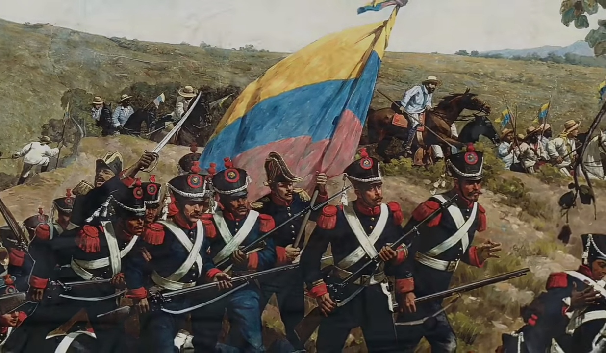
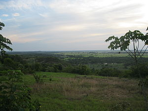
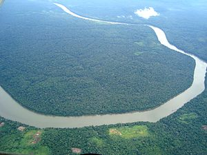
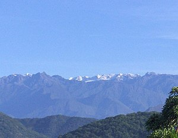

Avant l'arrivée des conquistadors espagnols la Colombie était peuplée par différents peuples amérindiens, parmi lesquels les Chibchas. Leur civilisation est détruite par les conquérants espagnols. Le premier contact entre les Européens et l'actuelle Colombie eut lieu à la suite d'une expédition commandée par l'Espagnol Alonso de Ojeda(un explorateur et conquistador espagnol)
 Après l'invasion de l'Espagne par la France de Napoléon en 1808 commencèrent les guerres d'indépendance en Amérique du Sud. Le congrès de Cúcuta de 1821 approuva une constitution, dont le principal objectif était la création d'une république de Colombie, aujourd'hui connue sous le nom de Grande Colombie dont a été présent Simon Bolivar et Santader. 
L’indépendance de la Colombie a commencé le 20 juillet 1810, grâce à un incident avec un vase dans la ville de Santafé de Bogotá. L’indépendance de la Colombie a été un long processus, influencé par des facteurs de mécontentement national et par l’éveil du peuple au monde moderne. La Révolution des Communeros est un antécédent de la guerre d’indépendance, qui a comporté six batailles au total. Un soulèvement qui est aujourd’hui connu sous le nom de département de Santander. Environ 20 000 hommes y ont marché jusqu’à Santafé pour protester contre le vice-roi. Mais les 3 batailles importantes de l'independance colombiennes sont:
Situé à 14 kilomètres de Tunja et à 110 kilomètres de Bogotá, le pont de Boyacá a été le témoin de l’une des plus grandes batailles de la campagne de libération. Cet événement a eu lieu le 7 août 1819. Là, les Créoles ont combattu les Espagnols pour empêcher ces derniers de prendre le contrôle de Santa Fé de Bogotá.
Cartagena a été totalement détruite. Elle n’était habitée que par des êtres mourants et malades, et loin de la splendeur qu’elle avait atteinte. La ville a été reconquise en 1821 et il a fallu plus d’un siècle pour que la population de 1815 revienne.
La bataille de Ciénaga a été l’une des batailles les plus féroces et les plus sanglantes de la Campagne du Libérateur colombien. Pour Bolivar, il était fondamental de contrôler la Magdalena et, surtout, sa capitale Santa Marta. Cette ville était en relation constante avec Carthagène et exerçait un contrôle fluvial dans la région. Ils ont ainsi limité l’accès aux armes de l’armée libératrice. Cette bataille s’est déroulée sur terre et sur l’eau, sous le commandement des généraux Montilla et Brión.
savoir un peu plus sur l'histoire du paysLa Colombie est divisée en cinq grandes régions naturelles : la Caraïbe, le Pacifique, les Andes, l'Orénoquie, et l'Amazonie ; dans chacune d'elles, la composition ethnique, la langue, la nourriture et les activités économiques sont très diversifiées. Les Andes colombiennes, à la différence de celles des autres pays andins, sont divisées en trois massifs séparés par deux grandes rivières : le Cauca et le Magdalena, qui était autrefois la voie de transport la plus importante du pays.
°À l'est les plateaux et les plaines des affluents de l'Amazone et de l'Orénoque. La partie nord de cette zone est couverte par la savane et est désignée par le toponyme llanos tandis que dans la partie sud la forêt dense domine.
 °L'Ouest est une région montagneuse qui est la partie la plus au nord de la cordillère des Andes. Elle est formée de trois chaînes de montagnes, la cordillère Occidentale, la cordillère Centrale et la cordillère Orientale, dont certains monts dépassent les 5 000 m d'altitude. Le río Cauca, affluent du río Magdalena, représente la limite naturelle entre les deux premières formations, assez rapprochées. Mais les deux sommets de la Colombie, le pic Cristóbal Colón (5 775 m) et le pic Simón Bolívar (5 774 m), se situent tous deux dans une chaîne côtière, la sierra Nevada de Santa Marta.
